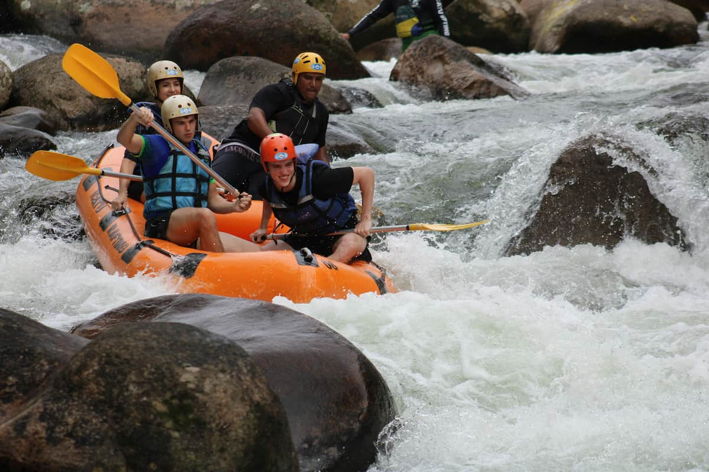

Here are some of our trips

Know a some of our trips
This solo trip with Hidrox Adventure on the short, Class II "Eco River" was an unforgettable test of self-reliance. I launched my small raft, trading the noise of the world for the river's steady roar. For thirty minutes of pure, intense focus, every paddle stroke was a personal challenge. Successfully navigating the rapids alone provided a unique shot of adrenaline followed by profound peace. It was a short escape, but a powerful lesson in mastering the current and myself.
This intense run with Hidrox Adventure proved teamwork is everything. Navigating the short, rocky "Stone-Run" required immediate and flawless communication. We traded the river's roar for our shouts: "Left!" "Hard Right!" Every rapid was a shared problem, demanding synchronized paddle strokes to thread the needle past submerged granite. Emerging downstream, exhausted but unified, we realized the real triumph wasn't beating the river, but mastering our coordination. It was a fast, adrenaline-fueled testament to our collective strength.
This extended expedition with Hidrox Adventure on the vast, mile-wide "Grand Passage" river was a true test of teamwork and endurance. Navigating the huge, unpredictable currents of the wider river demanded unwavering communication across our entire large raft. We weren't just fighting rocks; we were maneuvering against massive, swirling hydraulics. Every shift in the water required instantaneous calls—"All Forward!", "Pivot Right!"—and perfectly synchronized paddles from every person aboard. The shared commitment to powering through the immense scale of the river forged an incredible unity, turning a challenging passage into a collective triumph of shared strength.
| River | Description | Level | Cost by person | Special price in group |
|---|---|---|---|---|
| Eco River | An exciting route for individuals who love adrenaline. | Pro | $ 40.00 | N/A |
| Store-Run | A trip filled with rocks to dodge can be an awesome adventure, just relax and enjoy the rock and roll!!! | $ 25.00 per person | ||
| Grand Passage | Enjoy a wide, beautiful river with spots perfect for taking pictures and capturing amazing moments, along with sections full of pure adrenaline. | Amateur | $ 25.00 | $ 15.00 per person |
| Down-mountain | Begin deep within the mountain and quickly raft down to the big river, following the water paths carved out over time. | intermediate | $ 30.00 | $ 20.00 |
| Waterfall Grant Lake | Start at the top of the hill and ride quickly downhill, enjoying the exciting waterfalls the mountain provides. Enjoy the ride!!! | intermediate | ||
| All trips should be equipped with proper safety gear. If you need any equipment, we also offer rentals. | ||||